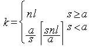

title: glPixelStoref function (Gl.h) description: Sets pixel storage modes. | glPixelStoref function (Gl.h) ms.assetid: 8d5055d7-3ea4-40b7-9447-2a005129da58 keywords:
Sets pixel storage modes.
void WINAPI glPixelStoref(
GLenum pname,
GLfloat param
);
pname
The symbolic name of the parameter to be set. Six of the storage parameters affect how pixel data is returned to client memory, and are therefore significant only for glReadPixels commands. They are as follows:
| Storage Parameter | Description |
|---|---|
| GL_PACK_SWAP_BYTES | If true, byte ordering for multibyte color components, depth components, color indexes, or stencil indexes is reversed. That is, if a four-byte component is made up of bytes b0 , b1 , b2 , b3 , it is stored in memory as b3 , b2 , b1 , b0 if GL_PACK_SWAP_BYTES is true. GL_PACK_SWAP_BYTES has no effect on the memory order of components within a pixel, only on the order of bytes within components or indexes. For example, the three components of a GL_RGB format pixel are always stored with red first, green second, and blue third, regardless of the value of GL_PACK_SWAP_BYTES. |
| GL_PACK_LSB_FIRST | If true, bits are ordered within a byte from least significant to most significant; otherwise, the first bit in each byte is the most significant one. This parameter is significant for bitmap data only. |
| GL_PACK_ROW_LENGTH | If greater than zero, GL_PACK_ROW_LENGTH defines the number of pixels in a row. If the first pixel of a row is placed at location p in memory, then the location of the first pixel of the next row is obtained by skipping [newline] components or indexes, where n is the number of components or indexes in a pixel, l is the number of pixels in a row (gl-pack-row-length if it is greater than zero, the width argument to the pixel routine otherwise), a is the value of gl-pack-alignment, and s is the size, in bytes, of a single component (if a |
| GL_PACK_SKIP_PIXELS and GL_PACK_SKIP_ROWS | These values are provided as a convenience to the programmer; they provide no functionality that cannot be duplicated simply by incrementing the pointer passed to glReadPixels. Setting GL_PACK_SKIP_PIXELS to i is equivalent to incrementing the pointer by i n components or indexes, where n is the number of components or indexes in each pixel. Setting GL_PACK_SKIP_ROWS to j is equivalent to incrementing the pointer by j k components or indexes, where k is the number of components or indexes per row, as computed above in the GL_PACK_ROW_LENGTH section. |
| GL_PACK_ALIGNMENT | Specifies the alignment requirements for the start of each pixel row in memory. The allowable values are 1 (byte-alignment), 2 (rows aligned to even-numbered bytes), 4 (word alignment), and 8 (rows start on double-word boundaries). |
The other six storage parameters affect how pixel data is read from client memory. These values are significant for glDrawPixels, glTexImage1D, glTexImage2D, glBitmap, and glPolygonStipple. They are as follows:
| Storage Parameter | Description |
|---|---|
| GL_UNPACK_SWAP_BYTES | If true, byte ordering for multibyte color components, depth components, color indexes, or stencil indexes is reversed. That is, if a four-byte component is made up of bytes b0 , b1 , b2 , b3 , it is stored in memory as b3 , b2 , b1 , b0 if GL_UNPACK_SWAP_BYTES is true. GL_UNPACK_SWAP_BYTES has no effect on the memory order of components within a pixel, only on the order of bytes within components or indexes. For example, the three components of a GL_RGB format pixel are always stored with red first, green second, and blue third, regardless of the value of GL_UNPACK_SWAP_BYTES. |
| GL_UNPACK_LSB_FIRST | If true, bits are ordered within a byte from least significant to most significant; otherwise, the first bit in each byte is the most significant one. This is significant for bitmap data only. |
| GL_UNPACK_ROW_LENGTH | If greater than zero, GL_UNPACK_ROW_LENGTH defines the number of pixels in a row. If the first pixel of a row is placed at location p in memory, then the location of the first pixel of the next row is obtained by skipping [newline] components or indexes, where n is the number of components or indexes in a pixel, l is the number of pixels in a row (gl-pack-row-length if it is greater than zero, the width argument to the pixel routine otherwise), a is the value of gl-pack-alignment, and s is the size, in bytes, of a single component (if a |
| GL_UNPACK_SKIP_PIXELS and GL_UNPACK_SKIP_ROWS | These values are provided as a convenience to the programmer; they provide no functionality that cannot be duplicated simply by incrementing the pointer passed to glDrawPixels, glTexImage1D, glTexImage2D, glBitmap, or glPolygonStipple. Setting GL_UNPACK_SKIP_PIXELS to i is equivalent to incrementing the pointer by i n components or indexes, where n is the number of components or indexes in each pixel. Setting GL_UNPACK_SKIP_ROWS to j is equivalent to incrementing the pointer by j k components or indexes, where k is the number of components or indexes per row, as computed above in the GL_UNPACK_ROW_LENGTH section. |
| GL_UNPACK_ALIGNMENT | Specifies the alignment requirements for the start of each pixel row in memory. The allowable values are 1 (byte-alignment), 2 (rows aligned to even-numbered bytes), 4 (word alignment), and 8 (rows start on double-word boundaries). |
param
The value that pname is set to.
This function does not return a value.
The glPixelStore function sets pixel storage modes that affect the operation of subsequent glDrawPixels and glReadPixels as well as the unpacking of polygon stipple patterns (see glPolygonStipple), bitmaps (see glBitmap), and texture patterns (see glTexImage1D, glTexImage2D, glTexSubImage1D, and glTexSubImage2D).
The following table gives the type, initial value, and range of valid values for each of the storage parameters that can be set with glPixelStore.
| Pname | Type | Initial Value | Valid Range |
|---|---|---|---|
| GL_PACK_SWAP_BYTES | Boolean | false | true or false |
| GL_PACK_SWAP_BYTES | Boolean | false | true or false |
| GL_PACK_ROW_LENGTH | integer | 0 | [0,?) |
| GL_PACK_SKIP_ROWS | integer | 0 | [0,?) |
| GL_PACK_SKIP_PIXELS | integer | 0 | [0,?) |
| GL_PACK_ALIGNMENT | integer | 4 | 1, 2, 4, or 8 |
| GL_UNPACK_SWAP_BYTES | Boolean | false | true or false |
| GL_UNPACK_LSB_FIRST | Boolean | false | true or false |
| GL_UNPACK_ROW_LENGTH | integer | 0 | [0,?) |
| GL_UNPACK_SKIP_ROWS | integer | 0 | [0,?) |
| GL_UNPACK_SKIP_PIXELS | integer | 0 | [0,?) |
| GL_UNPACK_ALIGNMENT | integer | 4 | 1, 2, 4, or 8 |
The glPixelStoref function can be used to set any pixel store parameter. If the parameter type is Boolean, and if param is 0.0, then the parameter is false; otherwise it is set to true. If pname is an integer type parameter, then param is rounded to the nearest integer.
Likewise, the glPixelStorei function can also be used to set any of the pixel store parameters. Boolean parameters are set to false if param is 0 and true otherwise. The param parameter is converted to floating point before being assigned to real-valued parameters.
The pixel storage modes in effect when glDrawPixels, glReadPixels, glTexImage1D, glTexImage2D, glBitmap, or glPolygonStipple is placed in a display list control the interpretation of memory data. The pixel storage modes in effect when a display list is executed are not significant.
The following functions retrieve information related to glPixelStore:
glGet with argument GL_PACK_SWAP_BYTES
glGet with argument GL_PACK_LSB_FIRST
glGet with argument GL_PACK_ROW_LENGTH
glGet with argument GL_PACK_SKIP_ROWS
glGet with argument GL_PACK_SKIP_PIXELS
glGet with argument GL_PACK_ALIGNMENT
glGet with argument GL_UNPACK_SWAP_BYTES
glGet with argument GL_UNPACK_LSB_FIRST
glGet with argument GL_UNPACK_ROW_LENGTH
glGet with argument GL_UNPACK_SKIP_ROWS
glGet with argument GL_UNPACK_SKIP_PIXELS
glGet with argument GL_UNPACK_ALIGNMENT
| Requirement | Value |
|---|---|
| Minimum supported client | Windows 2000 Professional [desktop apps only] |
| Minimum supported server | Windows 2000 Server [desktop apps only] |
| Header | Gl.h |
| Library | Opengl32.lib |
| DLL | Opengl32.dll |